Jaime Sabartés, natif de Barcelone et vieil ami et secrétaire de Picasso, présenta sa considérable collection des oeuvres du peintre à la ville de Barcelone. En recevant sa magnifique donation, les autorités de la ville décidèrent de restaurer le Palais Berenguer d'Aguilar au numéro 15 de la Calle de Montcada pour y héberger la collection offerte par Sabartés.
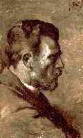 Son père |
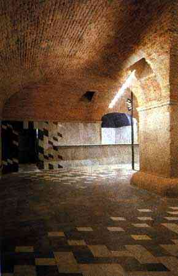 Le musée |
Picasso |
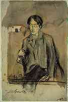 Sabartes |
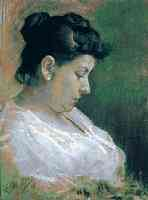 Sa mère |
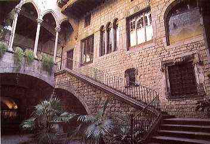 Le musée |
||
Cet important projet commença en 1960 et après beaucoup de dur travail et de restauration considérable ainsi qu'une adaptation du palais, le Musée Picasso fut formellement ouvert le 9 mars 1963.
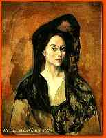 |
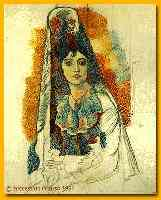 |
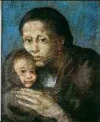 |
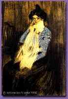 |
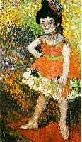 |
| Mme Benedetta | La Salchichona | Mère et enfant | Portrait de Lola | La Nana |
La presse ne lui donna toutefois pas ce nom à ce temps-là, mais le nomma constamment la Collection Sabartés ou bien l'exposition des oeuvres de Picasso au Palais Berenguer d'Aguilar.
 |
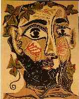 |
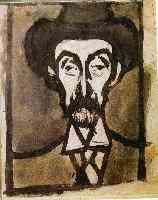 |
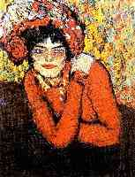 |
| Science et charité | Homme barbu | Portrait d'Utrillo | Pierreuse |
Mais plus tard le nom naturel et logique de "Musée Picasso" fut adopté officiellement et généralement.
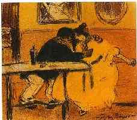 |
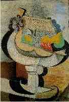 |
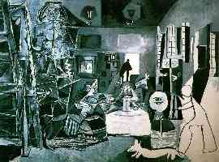 |
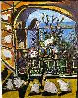 |
| Le divan | Compottier | Les Ménines | Pigeons |
Links:
- Picasso
Museum
- Picasso
Museum, Plans
Background: Nude
drawing, 1920, Collection Marie Cuttoli
Page courtesy of:
Irina
Manta, Switzerland